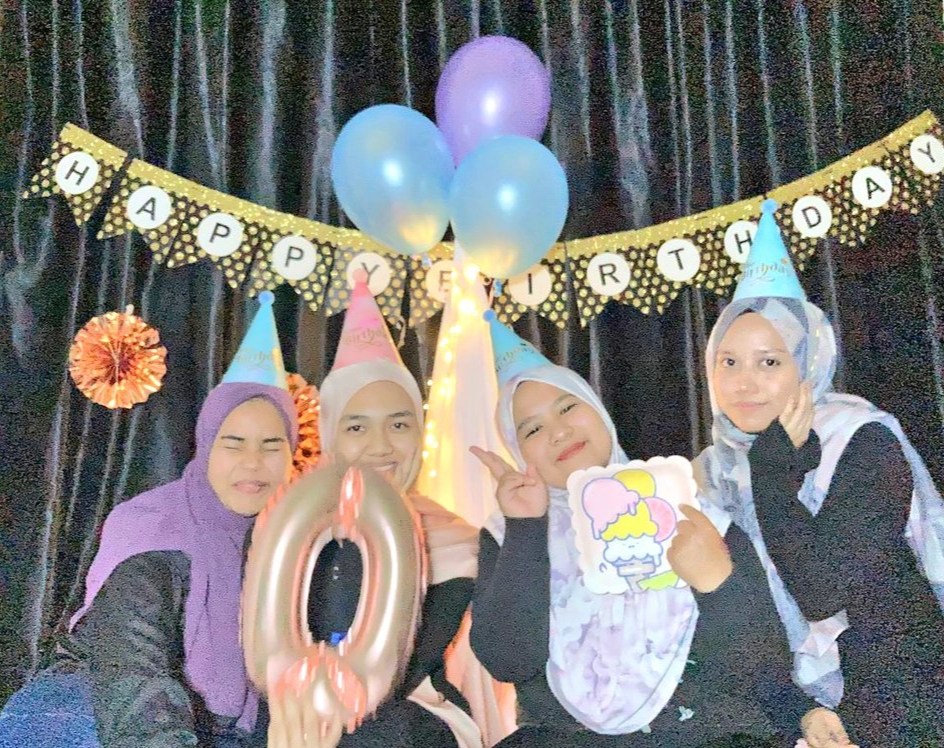
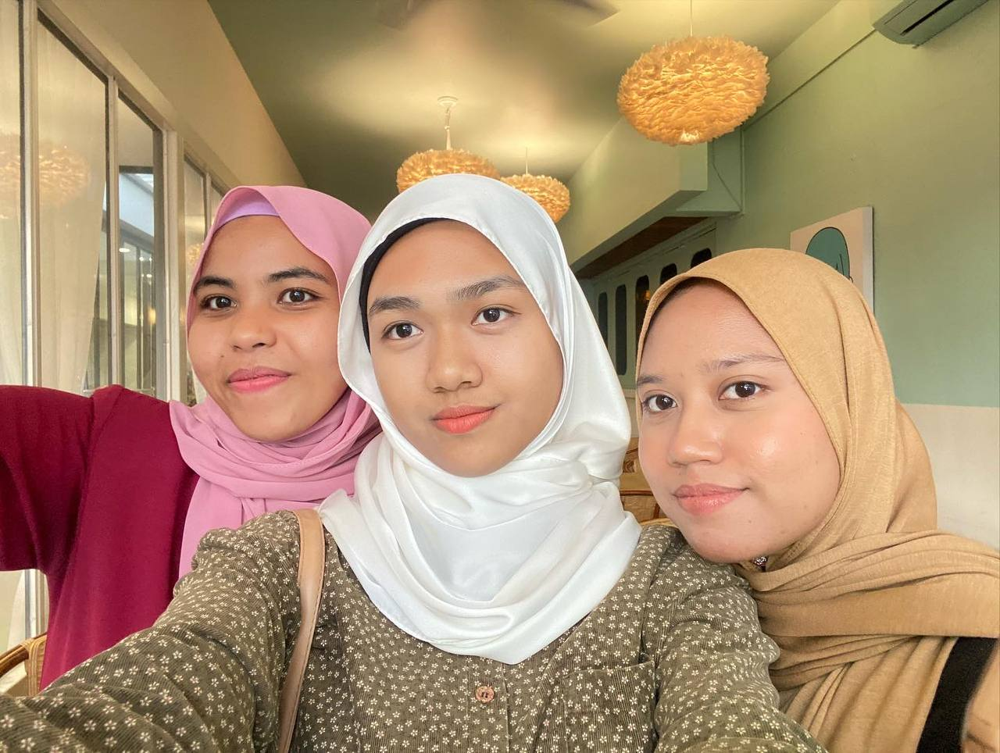
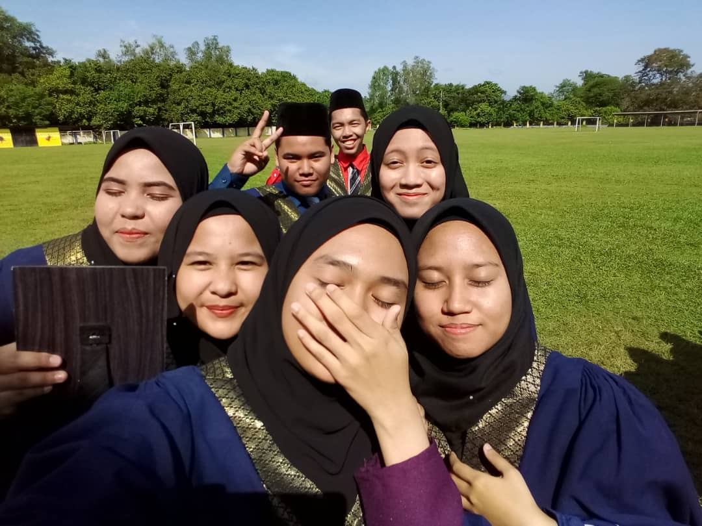
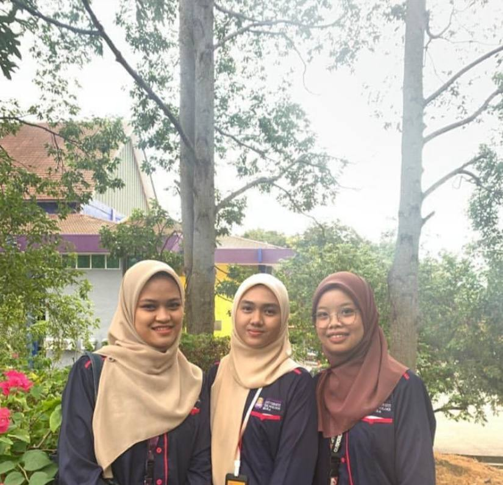
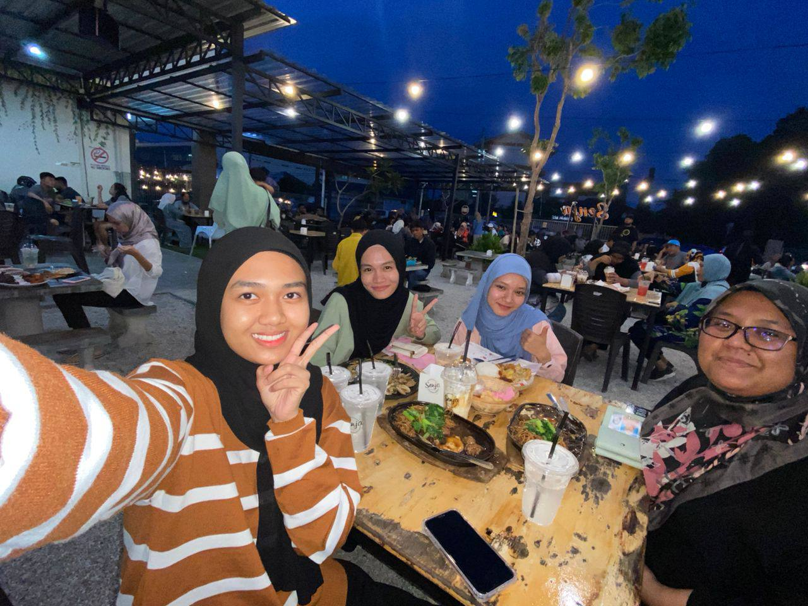
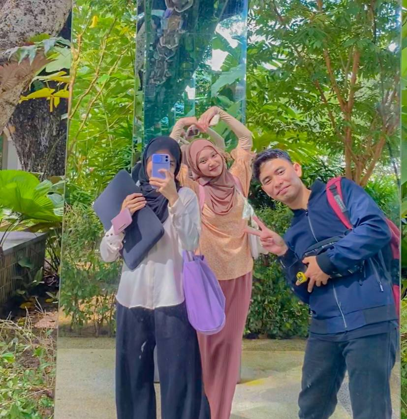

💗 This is my closed friends during high school and until now. We literally grew up together. We took importnat exams like PT3, SPM and MUET together and now all of us are adults. We have known and been close since 14 years until now and hope this friendship will last forever.
💗 The pictures on the bottom table are my friends at university. My friends during the diploma are now continuing their studies at UiTM in the Selangor state branch. Now, I have just continued my studies at the degree level and have just met new friends. They are good friends and we are very close even though we just met.
|  |  |  |
|  |  |  |